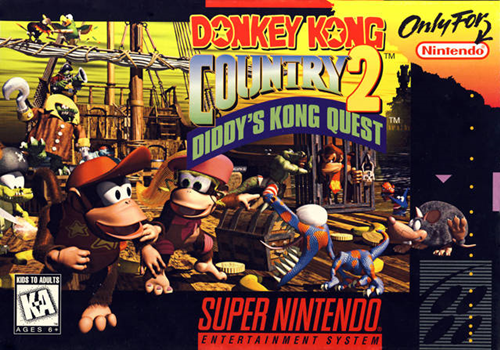

Animaniacs
A primeira vez que joguei Animaniacs, foi um verdadeiro teste de paciência e inteligência (coisas que eu claramente não tinha na época). O jogo começa com os três personagens — Yakko, Wakko e Dot — e você precisa alternar entre eles para avançar. Confesso que, no início, a mecânica me deixou mais perdido que cachorro em festa de gato.
Mas o que realmente marcou essa época foram os Tazos que vinham nos salgadinhos. Era a moeda de troca, o tesouro sagrado da infância. Colecionávamos, trocávamos e, claro, batíamos uns nos outros para ver quem ganhava mais. E aqui entra o vilão da minha história: o Marlon. Esse sujeito tinha um talento nato para roubar meus Tazos. Era como se ele fosse um ninja das figurinhas, sempre sumindo com meus preciosos discos de plástico.
Eu até tentava revidar, mas, sinceramente, eu apanhava mais do que um saco de pancadas em aula de boxe. No fim, acabei superando essa fase traumática (e aprendi a esconder melhor meus Tazos). Hoje, olho para trás e rio, mas, se eu encontrar o Marlon por aí, ainda vou cobrar aqueles Tazos que ele me deve..

Area 88
Dos jogos sérios que eu joguei, Area 88 era um dos que mais me fazia sentir um verdadeiro piloto de combate (ou pelo menos um aspirante a herói dos céus). A mecânica de escolher um piloto e ir melhorando seu avião era incrível. Eu sempre escolhia um favorito e focava em deixá-lo no nível máximo, como se ele fosse meu filho predileto. Só consegui zerar o jogo duas vezes, porque, convenhamos, a dificuldade era de lascar.
O jogo tinha umas regras malucas. Por exemplo, se você fosse atingido por um tiro, não podia simplesmente chorar e esperar o pior. Não, você tinha que desviar de todos os outros tiros até o sinal de alerta parar de tocar. Só aí sua barra de vida diminuía. Era tipo um treinamento militar: "Ah, foi atingido? Então se vira aí, soldado!"
E os chefes? Nossa, os chefes eram o verdadeiro pesadelo. Tinha missão que você voava até o final do mapa, dava meia-volta e ainda tinha que enfrentar um chefão que parecia ter tomado café com Red Bull. Era desesperador, mas também viciante.
No fim, Area 88 era daqueles jogos que te faziam sentir um gênio quando você passava de fase e um completo idiota quando perdia. Mas, mesmo com toda a dificuldade, ainda tenho um carinho enorme por ele. Afinal, quem não gosta de um desafio que faz você questionar suas habilidades (e sua sanidade)?

Super Bomberman
Ah, Super Bomberman... Esse jogo é um dos meus favoritos dessa lista, e sim, eu sou um fã boy assumido de Bomberman. Não tem como não ser! A primeira vez que joguei foi no fliperama do Miro, na esquina de casa. Lembro como se fosse hoje: eu estava lá, de bobeira, quando vi o pai do meu colega de classe, o seu João, jogando como um verdadeiro mestre das bombas. Fiquei fascinado!
O seu João e o filho chegavam até o último chefe, aquela nave em formato de ovo que parecia invencível. Eles ficavam lá, bombardeando tudo, mas nunca descobriam como derrotar o tal do ovo voador. Anos depois, quando finalmente descobri o segredo em casa, já era tarde: todo mundo já sabia. Fiquei me sentindo um gênio atrasado.
Mas o que realmente me pega nesse jogo não são só as explosões (que, convenhamos, são incríveis), mas a nostalgia que ele traz. Toda vez que jogo, me lembro daquela época da quarta série na escola Padre Romeu Mecca, em Itapevi. Era só alegria, bagunça e, claro, muita estratégia para não explodir os amigos (ou a si mesmo).
Super Bomberman é daqueles jogos que te transportam para um tempo em que a vida era mais simples, e a única coisa que importava era descobrir como vencer o chefe ovo sem explodir metade do mapa no processo. Bons tempos, hein?

Super Bomberman 2
Esse jogo eu só fui jogar muitos anos depois do lançamento. Na época, ele não estava na locadora Start Games (aquela famosa que todo mundo frequentava). Na verdade, ele só apareceu lá quase no fim da era Super Nintendo, quando eu já estava quase me aposentando dos videogames.
E sabe o que esse jogo me causa? Medo. Sim, medo! E por quê? Porque Bomberman 2 é daqueles jogos que não te deixam sair por aí correndo e explodindo tudo feito um louco. Não, não! Aqui você tem que pensar, planejar e, o mais importante, explodir os botões certos para liberar a porta de saída. Era tipo um quebra-cabeça explosivo, onde uma decisão errada podia te deixar preso no mapa, olhando para as paredes e se perguntando onde foi que você errou na vida.
Era difícil? Era. Mas nada impossível. Só precisava de paciência (algo que eu, confesso, não tinha muito na época). Hoje, olho para trás e penso: "Caramba, eu devia ter jogado mais isso, era um treino mental disfarçado de jogo de explosão". Mas, naquela época, eu só queria mesmo era ver tudo virar pó.

Bomberman 3
Dessa lista, Super Bomberman 3 foi um dos primeiros jogos que joguei em casa. Não joguei os jogos em ordem (afinal, quem precisa de cronologia quando se tem diversão?), mas lembro bem que foi esse e o Puzzle Bobble que marcaram o início da minha jornada gamer.
Esse jogo segue a mesma mecânica clássica de explodir tudo que vê pela frente, mas com um upgrade nos gráficos, que agora pareciam saídos de um anime. Foi o primeiro Bomberman que joguei na vida, e, confesso, ele me conquistou na hora. Mas nem tudo eram flores (ou bombas).
E as montarias, os Louies? Ah, esses bichinhos eram demais! Cada um tinha uma habilidade única: o verde corria mais rápido que o Flash, o roxo pulava como um canguru olímpico, o amarelo assoprava blocos como se fosse um ventilador mágico, e o marrom... bem, o marrom era o cara das bombas, colocando todas de uma vez só. Era tipo um arsenal ambulante.
Lembro que eu travava no segundo chefe, que eram dois caquitos mexicanos. Nossa, que raiva! Era frustrante demais. Só consegui zerar o jogo anos depois, quando já estava com 12 anos (e uma paciência muito maior). Na primeira vez que joguei, com 7 anos, eu achava que aqueles caquitos eram imbatíveis. Mal sabia eu que o verdadeiro desafio era a minha falta de estratégia.
E, olha, esse jogo também me traz uma memória... digamos, peculiar. Lembro que, na época, teve um furto em casa. Levaram a bicicleta do meu tio. Mas os caras não deviam ser muito bons de estratégia, porque ficaram rodando com ela no mesmo bairro. Meu tio recuperou a bike no dia seguinte. É, nem os ladrões sabiam fugir direito. "Oh, derrota!"
No fim, Super Bomberman 3 é mais que um jogo pra mim. É uma cápsula do tempo que guarda memórias de frustrações, vitórias, Louies saltitantes e até de uma bicicleta roubada (e recuperada). Bons tempos!

Bomberman 4
Pra mim, Super Bomberman 4 é o melhor da série no Super Nintendo. Sério, esse jogo é pura magia! O modo batalha é incrível, e cada personagem tem uma habilidade única (exceto o Bomberman branco e o preto, que ficaram com a mesmice de sempre).
E as montarias? Ah, os Louies voltaram, mas dessa vez com um visual renovado e ainda mais diversificado. Cada um tinha habilidades parecidas com as do Bomberman 3 (correr, pular, assoprar blocos e soltar bombas de uma vez), mas agora sem a aparência de cangurus. Era como se tivessem feito um upgrade nos bichinhos, deixando-os mais estilosos e funcionais.
Curiosamente, joguei esse depois do Bomberman 5, que eu pegava emprestado de um amigo. Quando finalmente consegui alugar o Bomberman 4 na lendária Escorpion Games, tive um déjà vu. Os mapas eram parecidíssimos com os do Bomberman 5, e eu ficava me perguntando: "Já joguei isso ou tô ficando maluco?" Spoiler: não tinha jogado, mas quase enlouqueci tentando entender.
Uma das mecânicas mais divertidas era a de jogar o seu parceiro com a luva. Sempre que aparecia um portal, eu não pensava duas vezes: meu irmão mais novo, o Gean, ia parar lá no outro lado do mapa, querendo ou não. Passávamos tardes inteiras jogando juntos nos finais de semana, rindo e brigando (mais brigando, na verdade).
E os chefes? Ah, os chefes eram tão fáceis que até parecia que estavam de folga. Zerava o jogo sem muito esforço, mas isso não tirava a diversão. Já o modo batalha tinha um toque especial: um modo quest onde você enfrentava os Bad Bombers em uma arena elétrica. Era caótico, divertido e viciante.
Sem dúvida, Super Bomberman 4 era (e ainda é) um jogo incrível. E, claro, ele me faz lembrar de tardes bem gastas com meu irmão, explodindo tudo, rindo até cansar e montando naqueles Louies que eram quase como nossos parceiros de crime virtual.

Bomberman 5
Pronto! Esse é o último da lista de Super Nintendo, e que jogo! Super Bomberman 5 foi um que peguei emprestado do Emerson (o famoso Tatinha — sim, eu sei que é um apelido de menina, mas nunca perguntei o motivo, então fica o mistério). Joguei ele por um bom tempo, e, confesso, é aquele clássico "mais do mesmo", mas com um toque especial.
Aqui, a mecânica de pegar os personagens foi retirada, e os Bad Bombers perderam seus poderes no modo batalha. Mas o que esse jogo tem de interessante? A nostalgia pura! Cada mundo representa um jogo da série Bomberman. Se você leu minha história sobre o Bomberman 4, deve lembrar que eu tinha a impressão de já ter jogado aquilo antes. Pois é, o mundo 4 era basicamente uma revisita ao Bomberman 4, com todas as fases do jogo anterior. Já os mundos 5 e 6 eram originais, criados especialmente para esse jogo.
E tem mais: dois finais! Um bom e um ruim. No final ruim, os Bad Bombers fogem, e você fica com aquela sensação de "perdi meu tempo". Já no final bom, você precisa achar os portais corretos desde o mundo 1 até o mundo 5. Era tipo uma caça ao tesouro, só que com bombas e muita paciência. O último chefe, apesar de não ser tão difícil quanto o Bagular (aquele monstro do Bomberman 3), ainda era bem desafiador.
E os Louies? Ah, eles voltaram com a aparência de cangurus, mas com um visual renovado. O verde, que corre rápido, agora é gordinho. A amarela virou uma menina com um laço vermelho na cabeça. O roxo ganhou um "pula-pula" (imagino que ele tenha feito aulas de parkour). O azul, que esqueci de mencionar no Bomberman 3, apareceu com uma camiseta de futebol e chutava as bombas como um craque. E o marrom? Esse ganhou uma cartola pra parecer um mágico. Sério, dava pra fazer um spin-off só com esses bichinhos.
Esse jogo me faz lembrar da quarta série, quando eu pegava jogos emprestados, saía de casa pra jogar bola, pegar goiabas e brincar na rua. Também me traz memórias do meu "rival" Robson. Esse cara era o terror da minha infância — eu apanhava dele direto e tinha um medo danado. Mas essa história fica pra quando eu falar de Fatal Fury.
No fim, Super Bomberman 5 é um jogo que mistura nostalgia, desafio e um pouco de caos. E, claro, me faz lembrar de uma época em que a vida era mais simples, e o maior problema era decidir se eu ia explodir blocos ou fugir do Robson.
Boogerman
Esse jogo não é lá aquelas coisas, mas me ensinou uma lição valiosa: podemos tentar antes de desistir (e, às vezes, a gente deveria desistir). Boogerman é aquele jogo de um "super-herói" que usa nojeiras como armas: catarro, arrotos, puns e até caca de nariz. Sim, você leu certo. É basicamente um herói do asco.
Lembro que alugamos esse jogo achando que seria fácil. Que engano! Boogerman entra direto para a galeria dos jogos mais difíceis que já joguei. Eu me mordia de raiva quando morria com apenas 3 pontos de dano. Quando finalmente passei do primeiro chefe, o Hickboy (um caipira com uma galinha), pensei: "Por que não tentar zerar esse jogo?" Spoiler: eu definitivamente deveria ter parado ali.
Mas minha mente teimosa não deixou. Aluguei o jogo várias vezes, determinado a vencer. Quando consegui passar do segundo chefe, a Revolta (uma bruxa), achei que tinha acabado. Mas não, o jogo decidiu me torturar com a área mais nojenta e chata de todas, cheia de inimigos que explodiam pus. Sério, dava até ânsia.
Aí veio o Flyboy, ou Menino Mosca, que foi meu terror pessoal. Toda vez que eu tinha que enfrentá-lo, eu queria morrer (ou matar alguém). Depois, veio um mundo aleatório misturando cavernas e montanhas, e o pior de todos: o chefe Deodor Ant. Esse inseto maldito me fez travar por anos. Só consegui derrotá-lo muito tempo depois, com muita paciência e um pouco de sorte.
E a cereja do bolo? Meu irmão do meio, o Gilson, descobriu no chute o password do último mundo. Sim, ele acertou de cara! Graças a isso, conseguimos chegar ao último chefe, o Booger Meister, que, felizmente, seguia padrões fáceis de decorar. Zeramos o jogo, mas não sem antes passar por muita raiva, nojo e frustração.
No fim, Boogerman é daqueles jogos que você ama odiar. Ele me ensinou que, às vezes, a persistência pode ser recompensada (ou pode te fazer perder horas de vida). E, claro, me fez rir muito com as nojeiras e as memórias de tentar vencer aquele caipira e sua galinha.

Dragon Ball Z 2
Esse jogo me lembra de quando eu estava na terceira série (hoje chamada de quarto ano). Eu jogava, mas não conhecia o anime nem o mangá. Achava que o Gohan era o Goku (sim, eu era bem leigo), e só descobri que ele não era jogável sem código muito tempo depois.
Esse jogo também me faz lembrar das encrencas que eu me metia na escola. Naquela época, eu pegava cartuchos emprestados do Rodrigo, que a gente chamava de "Rodrigo Cigarrinho" (não me pergunte o porquê, nunca descobri). Ele era brigão e, às vezes, até injusto — lembrava muito o Robson (que vou comentar quando falar de Fatal Fury), pois tinha o ego inflado e zero senso de justiça.
Apesar de ser intimidado por ele, o Rodrigo dava acesso a muitas coisas que a gente não tinha, igual ao famoso Dão (que vou comentar quando falar de Final Fight). Cheguei a comprar muitas revistas e cartuchos com ele, usando o dinheiro das latinhas que eu juntava. Era um negócio meio "toma lá, dá cá", mas funcionava.
Nessa época, minha mãe tentou me colocar em aulas de kickboxing (que vou comentar quando falar de Congo's Caper), mas não deu muito certo. Ainda assim, aprendi a observar bem as coisas antes de agir — o que, convenhamos, foi uma lição valiosa, já que eu fazia muita besteira.
Dragon Ball Z 2 me ensinou que nem sempre bater é a melhor estratégia. Observar e atacar no momento certo pode fechar a luta, principalmente contra o Broly, aquele saiyajin overpower lendário que me fez passar muita raiva.
No fim, esse jogo e essa fase da minha vida têm algo em comum: ambos eram cheios de desafios, mas também de lições que, hoje, me fazem rir (e agradecer por ter sobrevivido).
Congos Caper
Esse jogo é lindo, e eu tinha muita vontade de jogá-lo. A primeira vez que o vi foi no fliperama do Miro, na esquina de casa. Assim como Super Bomberman, ele tinha um chefe que ninguém conseguia passar — o primeiro chefe, pra ser mais exato. Ninguém entendia a mecânica de bater nos homenzinhos da caverna para que eles ricocheteassem e acertassem o dinossauro. Era tipo um quebra-cabeça que só os mais persistentes (ou teimosos) conseguiam resolver.
Lembro que o Alex tinha esse jogo. Ele e o irmão sempre foram muito gente boa, e até hoje eu gosto deles, apesar de, muitos anos depois, eles terem tentado me bater. Na época, eu não revidei — só desviei e tentei acalmá-los, porque não via motivos pra lutar. Aprendi nas aulas de kickboxing a ter disciplina, e, mesmo que o professor incentivasse a luta, eu preferia correr. Até hoje sou assim: não vejo sentido em brigar por qualquer coisa.
Nessa época, meu irmão Gilson e eu treinávamos kickboxing, mas saímos depois de um tempo porque alguns alunos começaram a nos ameaçar, usando a arte marcial para o mal. Anos depois, comecei a treinar taekwondo com o professor Thiago (vou comentar isso quando falar de Final Fighter 2).
Essa também foi uma época tensa na minha vida. Meus tios Carlos e Moisés foram embora para o Piauí, sua terra natal. Não sei bem o motivo, mas ouvi falar que eles mexeram com quem não deviam. Eu estava na terceira série, me metia em muita encrenca e não tinha noção dos perigos da vida. Hoje, sou bem diferente do que era naquela época, mas as memórias ficaram.
Voltando ao jogo, consegui finalizar Congo's Caper depois de muito tempo. Aquele dragão me fez passar uma raiva danada, mas, anos depois, entendi que ele tinha padrões que dava pra seguir e derrotar sem levar dano.
No fim, Congo's Caper e essa fase da minha vida têm algo em comum: ambos eram cheios de desafios, mas também de lições que, hoje, me fazem rir (e agradecer por ter sobrevivido).

Donkey Kong Country

Donkey Kong Country 2

Donkey Kong Country 3

Final Fight

Final Fight 2
Final Fight 3

Final Fantasy 2

Goof and Troop
Joe e Mac 2

Killer Instinct

Lamborghini

Lagoon
Lemmings
Esse jogo é de estratégia pura, onde você precisa salvar uma porcentagem dos lemmings (aqueles bichinhos verdes que parecem ter um pacto com a autodestruição) para avançar para a próxima fase. É um jogo que exige paciência, planejamento e, às vezes, um pouco de sorte. E, assim como os lemmings, eu também estava tentando encontrar meu caminho em uma fase bem obscura da minha vida, lá por volta de 2002.
Nessa época, peguei Lemmings emprestado do Thiago, um colega que ia pra igreja comigo, o irmão Diego e as irmãs Vanessa e Angelica. Eles eram gente boa pra caramba — acho que até hoje estão por aí, provavelmente cuidando de vidas como enfermeiros. Eu perdi o contato com eles porque, bem, eu aprontei (mas essa história fica pra quando falarmos de Dragon Ball).
Eu estava numa fase bem dark, sempre sozinho e meio que "afim" de alguém, mas acho que era mais carência de atenção do que qualquer outra coisa. E, como sempre, eu confundia as coisas. Foi aí que conheci a Jéssica, uma menina que eu achava linda e que, claro, virou personagem das minhas histórias em quadrinhos (vou contar tudo quando falar de Mega Man X2).
Assim como a Noely (da história do Judge Dredd), a Jéssica nunca foi má comigo. Ela sempre deixou as coisas claras, mas eu, teimoso, via passarinho verde onde não tinha. Lembro que tentei de tudo pra chamar a atenção dela, desde desenhos até estratégias dignas de Lemmings. Nada funcionava. E, pra piorar, tinha uma colega da igreja que estava afim de um outro colega, e os dois acabaram ficando. A gente chorou — não eu por causa da Jéssica, mas pela dor da minha colega. Foi bem doido.
Mas eu não desisti. Continuei indo pra igreja, "stalkeando" a Jéssica e até entrei num curso de espanhol na escola dela, que ficava a mais de 4 km da minha casa. Fiz amizade com o pessoal da sala dela e, num ato de "generosidade", emprestei minha pasta de desenhos pra ela mostrar pra turma. Na semana seguinte, ela me disse que passou mal na sala e, quando voltou, a pasta tinha sumido. Triste, mas real.
Voltando ao jogo, Lemmings era difícil pra caramba, mas me mantinha ocupado por horas, tentando salvar aqueles bichinhos verdes que insistiam em se jogar de penhascos. Cheguei perto do final, mas nunca zerei. Talvez porque, assim como os lemmings, eu também estava tentando encontrar um caminho seguro em meio ao caos.
No fim, Lemmings e essa fase da minha vida têm algo em comum: ambos eram cheios de obstáculos, estratégias falhas e, claro, muita confusão. Mas, assim como no jogo, eu sobrevivi — mesmo que com alguns lemmings perdidos pelo caminho.

Magical Quest 3
Megaman 7
Esse é um dos jogos que eu pegava emprestado com o Rodrigo Cigarrinho (conto mais sobre ele no texto de Dragon Ball Z 2). Ele me emprestava, mas com uma condição: eu tinha que devolver no dia seguinte. Era chato porque não dava tempo de jogar direito, e, pra piorar, eu vivia de castigo por aprontar muito na escola. Meu irmão do meio, o Gilson, sempre colaborava com as decisões da minha mãe, então eu raramente tinha tempo livre pra jogar.
Lembro de uma vez que peguei o cartucho emprestado e demorei pra devolver. Resultado: levei um soco no estômago do Rodrigo e, pra completar, uma chinelada da minha mãe. Depois desse dia, nunca mais peguei nada emprestado com ele. Preferia alugar na Start Games, onde pelo menos não tinha risco de levar porrada.
E, falando em Mega Man 7, esse jogo era difícil pra caramba. O último chefe, o Dr. Wily, era um pesadelo. Tive que alugar o jogo várias vezes até conseguir zerar. Era frustrante cair nos espinhos e levar choque daquela nave maldita, mas, no fim, consegui vencer. Esse jogo faz parte da minha galeria de "jogos que só terminei uma vez", porque, sinceramente, a raiva que ele causa não compensa zerar de novo.
No fim, Mega Man 7 e essa fase da minha vida têm algo em comum: ambos eram cheios de obstáculos, mas também de lições que, hoje, me fazem rir (e agradecer por ter sobrevivido).

Megaman X

Megaman X2
Mortal Kombat

Mortal Kombat 3

Prehistorik Man

Raiden Trad
Rockman and Forte

Sonic Wings

Stun Race
Esse jogo era ruim, mas divertia. Um jogo de carros poligonais com olhos gigantes (sim, olhos gigantes!) que pareciam saídos de um pesadelo low-poly. Era estranho, mas tinha seu charme. Aprendi que, em jogos de corrida, a estratégia nem sempre é só acelerar; às vezes, você precisa pisar no freio e pensar antes de fazer aquela curva impossível.
Mas o que realmente marcou esse jogo foram as memórias que ele traz. Lembro que foi na época do primeiro ano novo que passei no hospital. A gente estava se arrumando para passar a virada na casa do vizinho quando, do nada, bati a cabeça no telhado. E não foi qualquer batida: abriu um buraco! Sério, foi tão absurdo que até hoje me pergunto como consegui fazer aquilo.
Resultado: fomos para o pronto-socorro, e levei 4 pontos na cabeça. Chegamos em casa depois da 1 da manhã, com a virada do ano já acabada e eu, é claro, com a cabeça costurada.
Esse jogo também me lembra das filhas do vizinho, a Bruna e a Carol. Essas duas me odiavam (e, pra ser justo, eu também não era lá aquela flor que se cheire). Naquela época, eu sofria bullying na escola e, pra tentar brecar isso, acabei aceitando meu apelido: "Jamanta". Não era o melhor apelido do mundo, mas, pelo menos, eu tentava levar na esportiva.
No fim, Stunt Race FX é daqueles jogos que, mesmo sendo estranhos e meio ruins, trazem memórias que a gente não esquece. E, claro, me faz lembrar de uma época em que bater a cabeça no telhado era só mais um detalhe numa noite de ano novo cheia de altos e baixos.

Super Mario All-Stars
Esse foi o primeiro jogo em que fui feito de besta. Por quê? Meu vizinho tinha o Super Mario All-Stars, aquele cartucho lendário que incluía Super Mario Bros., Super Mario Bros.: The Lost Levels, Super Mario Bros. 2 (USA) e Super Mario Bros. 3. Ele sabia que eu queria muito aquele jogo, então me fez uma proposta "justa": 4 jogos em troca desse. E, como eu era um genio, aceitei.
Confesso que fiquei chateado por um bom tempo, mas, no fim, até valeu a pena. Esse foi o cartucho que ficou mais tempo comigo — cerca de 2 anos —, porque eu estava determinado a terminar todos os jogos. E pasmem: Super Mario Bros.: The Lost Levels era o mais difícil de todos. Aquele jogo era um teste de paciência e sanidade. Mas, no fim, consegui zerar todos, e a sensação de vitória foi incrível.
Esse jogo me lembra dos meus vizinhos, Lucas, Rafael e Bruna, que já tinham terminado Super Mario Bros. e Super Mario Bros. 3. Eles ficavam dando dicas pra gente, tipo uns "professores de Mario". Esses vizinhos sempre tinham tudo antes de todo mundo, mas essa história eu vou aprofundar quando falar de PlayStation.
No fim, Super Mario All-Stars foi um jogo que me ensinou duas lições valiosas: 1) nunca faça trocas desiguais com vizinhos espertos, e 2) persistência é a chave para vencer até os jogos mais difíceis. E, claro, me fez passar horas e horas pulando em cogumelos e tentando não morrer nos mundos mais insanos de The Lost Levels.

Super Mario RPG

Super Mario World

Super Mario World 2 Yoshi's Island

Thunder Spirits

Top Gear

Top Gear 2

Top Gear 3000

Wild Cats

Wild Guns

Daffu Duck

F Zero
Choplifter III

Asterix

Road Runner's Death Valley Rally

Taz-Mania
Esse jogo tem a história mais estranha de todos que já joguei. Quando peguei Taz-Mania, eu pensei: "Ah, deve ser um jogo de aventura onde o Taz sai destruindo tudo, como nos desenhos animados". Só que não. Em vez disso, era um jogo onde você corria atrás de pintinhos (sim, pintinhos!) para lanchar. Tinha que desviar de carros, ônibus e outros obstáculos enquanto tentava comer os pobres pintos na rua. E, pra piorar, o jogo ainda tinha um limite de tempo. Era tipo um Fast Food do caos.
Lembro que me frustrei bastante com esse jogo, mas, teimoso que sou, consegui zerar muito tempo depois. Não foi fácil, mas a sensação de vitória (e alívio) foi imensa.
Esse jogo me lembra de uma história curiosa da época. Foi quando rolou aquele primeiro evento do "Fim do Mundo" segundo a teoria de Nostradamus. Todo mundo estava falando disso, e eu, criança, fiquei meio assustado. Pra piorar, a fonte do meu videogame tinha queimado, e eu precisei juntar latinhas para comprar uma nova (que era cara pra caramba). Minha mãe me levou na locadora para comprar a peça e, claro, alugar um jogo. Escolhi Robocop vs Terminator — nada como um jogo apocalíptico pra combinar com o clima do fim do mundo, né?
Lembro que na TV falavam que o mundo ia acabar no domingo. Quando fui dormir, só pensava: "Acabou". Mas, no dia seguinte, acordei e... nada. O mundo ainda estava lá, e o tal evento tinha sido "adiado". Minha mãe estava assistindo à missa na TV, e no jornal só falavam do alinhamento dos planetas. Fiquei meio decepcionado, mas também aliviado. Afinal, ainda tinha Taz-Mania para zerar e pintinhos para comer.
No fim, Taz-Mania é daqueles jogos que você ama odiar. E, mesmo com toda a bizarrice, ele me traz memórias de uma época em que o fim do mundo era só mais um motivo para juntar latinhas e alugar jogos.

Fatal Fury

Fatal Fury Especial

Axelay

The legend Of Zelda - A Link to the past

Kirby Super Star
Esse jogo é tão fofo que até parece que foi feito pra derreter corações. A gente controlava uma bolinha rosa que comia os inimigos, ganhava poderes e ainda podia criar um companheiro para jogar junto — que, por sinal, podia ser controlado pelo segundo controle. Era perfeito para jogar com meus irmãos, e a gente se divertia horrores.
Lembro que aluguei esse jogo várias vezes, até que meu videogame foi destravado para rodar jogos piratas. Só que, claro, Kirby Super Star e Super Mario RPG pararam de funcionar. Era frustrante, mas faz parte da vida de quem vivia na era dos cartuchos.
Esse jogo me traz lembranças muito inocentes daquela época do início da quarta série (hoje chamada de quinto ano). Eu jogava antes de ir para a escola, já que estudava à tarde. Ia pra aula, comprava um salgadinho na venda e pegava um tazo, só para o Marlon me vencer e rapar todos de mim logo em seguida.
Nessa época, também fui obrigado a frequentar a escolinha de futebol. Detalhe: eu não gostava de futebol (e até hoje não gosto). Mas minha mãe achava que, como eu era menino, tinha que jogar bola. Lembro que treinávamos com o professor Mário, mas eu nunca fui escalado para os jogos de fim de semana. Queria jogar na linha pra fazer gols, mas no fim sempre me colocavam no gol — provavelmente pra eu não atrapalhar o time.
O auge (ou melhor, o fundo do poço) foi quando joguei no famoso "Campo do Havaí", em Itapevi. O zagueiro me atrapalhou, levei um gol humilhante, e ele ainda me xingou horrores. Fiquei tão indignado que abandonei a partida e fui embora. Desde então, fiquei um bom tempo sem jogar futebol, com exceção da Copa de 2002 (mas essa história fica pra quando falarmos de Super Soccer Deluxe).
Essa foi uma época de descobertas pra mim. Eu ainda não sabia o que gostava ou o que queria fazer, e acabava imitando os outros ao meu redor. Mas as coisas ficaram ainda mais complicadas quando apareceu o apelido que me perseguiu por anos: "Jamanta".
Tudo começou com a novela Torre de Babel, que passava na TV Globo. Um dos personagens se chamava Jamanta, e o programa Casseta e Planeta Urgente fez uma sátira hilária dele. Em uma cena, o Jamanta estava debaixo dos escombros de um shopping que explodiu, dizendo: "Jamanta não morreu, Jamanta não morreu!" O repórter pisava nele e falava: "Jamanta morreu sim."
Pois bem, um dia, no parque onde a gente treinava, encostei em um madeirite que caiu em cima de mim. Um colega, o Flávio, começou a gritar: "Jamanta não morreu, Jamanta não morreu!" Pronto. A escolinha inteira começou a me chamar de Jamanta. E, pra piorar, no mesmo dia, minha professora faltou, e a diretora me colocou na sala do Flávio. Quando entrei, ele gritou: "Não, Jamanta não, mano!" A sala inteira riu, e assim começou a saga do meu apelido.
No fim, Kirby Super Star e essa fase da minha vida têm algo em comum: ambos eram cheios de altos e baixos, mas também de momentos que, hoje, me fazem rir. E, assim como o Kirby, eu sobrevivi — mesmo que com alguns "golpes" no caminho.

Kyle Pettys No Fear
Power Rangers

Power Rangers The Movie
Power Rangers The Fight Edition

Super SWIV

Tetris Attack

The King Of Fight 2000
Ok, vou admitir: eu sou um trouxa mesmo. Como eu ia saber que esse jogo não era igual aos dos fliperamas? Esse The King of Fighters 2000 era uma bizarrice pura, mas, mesmo assim, eu insistia em jogar. Afinal, eu tinha alugado aquilo, e ninguém gosta de jogar dinheiro fora, né?
Esse jogo era uma versão tão estranha que usava os sons de Final Fighter II. Sim, você não leu errado. Era tipo um Frankenstein dos jogos de luta: lento, bugado e com uma vibe de "fizemos o que deu". Mas, mesmo sendo horrível, eu finalizei ele várias e várias vezes. Por quê? Porque eu sou teimoso e, bem, já tinha pago o aluguel.
Esse jogo me lembra do bar do meu pai, onde a gente ficava pegando chocolates e até algumas moedas escondidas para comprar doces ou jogar fliperama em outro lugar. Era uma época em que a felicidade vinha em forma de doce e créditos no fliperama. Saudades daqueles tempos!
No fim, The King of Fighters 2000 era um jogo que não deveria existir, mas que, de alguma forma, marcou minha infância. E, olhando para trás, até a bizarrice tem seu charme. Ou pelo menos é o que eu digo pra me sentir menos trouxa por ter jogado aquilo tantas vezes.

The Mask

Metal Warriors
Lion King

Uniracers

Robocop Vs Terminator
Esse jogo é bem violento, com armas, metralhadoras e lança-mísseis. É tipo um filme de ação dos anos 90, só que em pixel art e com ainda mais explosões. Robocop vs Terminator é daqueles jogos que te fazem sentir um herói destrutivo, mas também te lembram que, às vezes, a dificuldade é maior que a diversão.
Esse jogo me lembra daquela época do evento do "fim do mundo". Assim como o jogo mostra um monte de exterminadores dominando o planeta, o nosso mundo real estava dominado por pessoas com medo do apocalipse (eu incluso). Lembro que muita gente ficou paranoica, algumas até tiraram a própria vida pra não ver o "fim". Tinha festas estranhas, previsões bizarras e um clima geral de "será que amanhã ainda existe?"
Mas, no meio desse caos todo, eu estava lá, tentando zerar Robocop vs Terminator. E, olha, não foi fácil. Esse jogo é difícil pra caramba, e a raiva que ele causa nem sempre compensa a satisfação de passar de fase. Só consegui terminar ele uma vez, e foi o suficiente. Depois disso, pensei: "Melhor deixar os exterminadores dominarem o mundo virtual sem mim".
No fim, Robocop vs Terminator é um jogo que, além de ser um teste de paciência, me faz lembrar de uma época em que o mundo real parecia tão caótico quanto o jogo. E, claro, me ensinou que, às vezes, é melhor deixar o apocalipse rolar sem a gente.

Judge Dredd
Esse foi o primeiro jogo que me fez quebrar uma das minhas próprias regras: "Não trocar um jogo antes de zerar". Judge Dredd é tão difícil que chega a dar vontade de desligar o videogame e jogar pela janela. A mecânica era confusa: às vezes os inimigos se rendiam, às vezes não (e você ficava lá, sem saber se atirava ou dava uma cartinha de "boa conduta"). As armas e munições eram escassas, e a maioria das vezes você tinha que se desviar dos objetivos pra procurar recursos, o que alongava o jogo de forma desnecessária. Era tipo um teste de paciência, só que sem recompensa no final.
Esse jogo me lembra do dia que briguei com o cara mais engraçado da minha sala, o Thiago. Me arrependo muito, porque quebrei o óculos dele. O Thiago era o Paulinho Gogó da época — engraçado, carismático e sempre fazendo todo mundo rir. Já eu? Era o sem graça do grupo. Na quarta série, eu tinha meu primeiro amor, a Noely, uma menina que estudava comigo. Ela nunca foi má comigo, sempre deixou tudo bem claro, mas eu, teimoso, via passarinho verde onde não tinha.
Não sabia como chamar a atenção dela, então comecei a imitar o Thiago e o Nilson (outro colega engraçado). Sabe aquela história de que toda imitação é uma forma de elogio? Pois é, no meu caso, era uma forma de humilhação. Eu continuava sem graça, fazia piadas que ninguém ria, e a Noely, cansada, finalmente me deu um tapa na cara (figurativo e literal). Ela disse: "Jonathan, sabe por que ninguém ri das suas piadas? Porque você é muito infantil." O pessoal ao redor começou a gritar como se tivesse visto um gol.
Aquele tapa foi um divisor de águas na minha vida. Agradeço muito a ela por isso, porque foi o empurrão que eu precisava pra acordar pra vida. Só que, no processo, acabei ganhando o apelido de "Jamanta" e, pra piorar, saía brigando com todo mundo (e apanhando, porque não sabia brigar direito). O Thiago, coitado, levou sem merecer.
No ano seguinte, a Noely mudou de horário, e eu, no meu auge de "stalker", fiz amizade com a maioria das pessoas da sala dela. Comecei a criar minhas próprias histórias em quadrinhos (vou contar tudo quando falar de Mega Man X2), onde cada colega era um personagem. A Noely era a protagonista no início, mas depois quem tomou o lugar dela foi a Jessica (mas essa história fica pra quando falarmos de Lemmings).
Essa fase foi uma das mais pesadas que eu passei, mas também foi uma das mais importantes. Aprendi que tentar forçar algo que não existe pode acabar com grandes amizades (como descobri mais tarde, na história do jogo NBA Hang Time).
No fim, Judge Dredd e essa época da minha vida têm algo em comum: foram difíceis, confusos e cheios de reviravoltas. Mas, assim como o jogo, eu sobrevivi — mesmo que com alguns "pontos de vida" a menos.

Star Gate

Rock 'N Roll Racing

Battletoads in Battlemaniacs

Batman Returns
Sonic 4
Esse jogo é daqueles que eu chamo de "pega trouxas". Por quê? Bem, naquela época, Sega e Nintendo eram rivais ferrenhos, e os jogos de um nunca sairiam para o console do outro (pelo menos não como hoje). Então, quando meu tio chegou com esse Sonic 4 para o Super Nintendo, eu fiquei hypado. Eu tinha muita vontade de jogar Sonic, já que meu vizinho tinha um Mega Drive, mas a mãe dele não deixava ninguém chegar perto do videogame.
Mas, é claro, não era bem o Sonic que eu esperava. Esse jogo era uma aberração. O Sonic não tinha os poderes clássicos do Mega Drive — na verdade, ele dava chutes. Sim, chutes! No meio das fases, a gente tinha que salvar o Mario de gaiolas (wtf?). E os chefes? Gatos. Cadê o Robotnik? Cadê a vibe do Sonic original? Era tudo muito estranho.
Anos depois, descobri a verdade: esse jogo era, na realidade, Ligeirinho (ou Speedy Gonzales and Los Gatos Bandidos) com sprites trocados. Um jogo que não era ruim, mas era incompleto, com apenas 4 mundos e fácil demais, especialmente se comparado ao original. Era tipo uma fanfic mal feita do Sonic.
Mas, apesar de tudo, esse jogo me traz memórias nostálgicas. Lembro de sair da escola, ir para a aula de educação física e depois passar no terreno de um cara perto da escola para pegar goiabas. Era uma época simples, em que até um Sonic falsificado conseguia me divertir (mesmo que eu não soubesse que era uma farsa).
No fim, Sonic 4 é daqueles jogos que você joga, ri da bizarrice e guarda na memória como uma curiosidade engraçada. E, claro, me faz lembrar de uma época em que a vida era mais leve, e o maior problema era decidir se eu ia salvar o Mario das gaiolas ou pegar mais goiabas no terreno do vizinho.
NBA Hang Time
Esse é um dos melhores jogos de esporte que já joguei no Super Nintendo. Era simples, mas viciante. O desafio era vencer todos os times da NBA, e eu perdia horas tentando. Lembro que a gente criava nosso próprio personagem, escolhia um time e jogava partidas 2x2. Quando fazíamos 3 cestas seguidas, a barra de run ficava ilimitada, e, se a dupla fizesse 3 cestas juntos, a música mudava, a bola ficava azul e a barra de run virava infinita por um tempo. Era sensacional!
Esse jogo me lembra de uma fase feliz da minha vida, quando eu ainda me interessava por esportes (sim, minha vida era bem aleatória). Na época, eu fazia parte do projeto "Corpo Ativo" e participava de quase todos os esportes — até ser expulso do futsal pelos outros alunos. No handball, também não me deixavam treinar, e os professores, como eram os mesmos, consentiam com isso. Mas não é essa história que vou contar aqui.
Nessa época, comecei a participar dos grupos de treinamento das equipes da escola e acabei ficando no vôlei. Eu gostava de vôlei e basquete, então só participava desses dois no projeto. Foi aí que fiz uma amizade muito boa com a Karen. Ela gostava de basquete e desenho, e a gente se dava super bem. Até que, claro, eu comecei a confundir as coisas de uma forma que nem eu entendia. Só sei que a gente parou de se falar por um bom tempo.
Também lembro que entrei na equipe de vôlei da escola, mas nunca joguei uma partida. Um dos jogadores, o Diogo, se sentia ofendido por eu estar no time e me ameaçou várias vezes, querendo que eu saísse de qualquer jeito. No fim, acabei saindo. A escola foi para o regional, e eu fiquei de fora.
Não me arrependo, já que eu não era um jogador tão bom assim. Ainda gosto de vôlei, mas só pra brincar. Já o basquete, eu gosto, mas não fui pra frente.
No fim, NBA Hang Time e essa fase da minha vida têm algo em comum: ambos eram cheios de altos e baixos, mas também de momentos divertidos. E, assim como no jogo, eu aprendi que nem sempre a gente faz a cesta, mas o importante é continuar jogando.

Dragon Ball Z Super Gokuden
Esse jogo beira a decepção de um jeito que dói. Eu esperava um jogo de aventura épica, mas o que encontrei foi um RPG sem mapa, onde você só jogava nas partes de luta — e no formato RPG, ainda por cima. A mecânica era estranha: você tinha que segurar os botões L e R para encher uma barra de força e fazer o Goku chegar mais rápido no meio do cenário pra atacar. Era tipo um teste de paciência, só que sem a recompensa de uma luta emocionante.
Esse é um dos poucos jogos que troquei sem zerar. E, olha, a história por trás disso é bem triste — e um pouco constrangedora.
Lembro que, para conseguir esse jogo, fiz uma cagada absurda que me arrependo até hoje. Foi o que me fez cortar laços com a família do Thiago. E, pra ser sincero, eu fui um babaca.
Peguei um jogo dele e um meu e troquei sem avisar. Quando ele veio me cobrar, eu simplesmente ignorei. A partir daí, ele parou de falar comigo, e eu não posso culpá-lo. Essa não foi a única vez que fui um tremendo idiota, mas foi uma das mais marcantes. Essa fase me fez entender que não podia fazer essas coisas, e, infelizmente, percebi que as pessoas se afastavam de mim por culpa minha mesmo.
No fim, Dragon Ball Z Super Gokuden e essa história têm algo em comum: ambos foram decepcionantes. O jogo, por não entregar o que prometia, e eu, por não entregar o mínimo de consideração que um amigo merece.
International Superstar Soccer Deluxe
Esse jogo é autoexplicativo: é um jogo de futebol para o Super Nintendo. Na época, eu tentei gostar de futebol por causa daquele preconceito estranho de que "homem que não gosta de futebol é menininha" (sim, mesmo existindo futebol feminino). Hoje, com mais de 35 anos, posso afirmar com todas as letras: não gosto de futebol.
Quando peguei esse jogo, foi mais para acompanhar meu irmão do meio, que adorava jogar. A gente até pegava emprestado do Marcelo, nosso vizinho do lado (vou falar mais dele em Killer Instinct). Ele era o cara que me convenceu a trocar 4 cartuchos pelo Super Mario All-Stars. Marcelo e meu irmão viviam terminando os campeonatos do jogo no modo single player. Eu tentei fazer o mesmo, mas só consegui terminar com um time — e uma única vez.
Esse jogo me faz lembrar de uma época em que a gente vivia pegando jogos emprestados e se reunia para jogar. Também me traz memórias da Copa do Mundo de 2002, na Coreia e no Japão. Diferente da Copa de 98 (que vou comentar em Ronaldinho Soccer '97), os jogos eram de madrugada. Muitas vezes, a gente esperava o jogo terminar e descia pra quadra pra jogar bola. Eu ainda tentava participar pra não ficar de fora, mas sempre era o goleiro. Lembro de uma vez que me desmaiaram com uma bolada na cara. Foi horrível, mas, como sempre, sobrevivi.
International Superstar Soccer Deluxe é um jogo incrível (se você gosta de futebol). Dá pra jogar com até 4 jogadores, mas recomendo só de 2 mesmo. Vale a pena jogar pelo menos uma partida de 5 minutos — mesmo que só pra lembrar que futebol não é sua praia.
Ronaldinho Soccer '97
Esse jogo era basicamente um hack de International Superstar Soccer Deluxe, mas com um toque brasileiro. O legal é que ele tinha times brasileiros, o que deixava o jogo mais próximo da nossa realidade. Meu irmão e eu jogávamos direto, sempre que pegávamos emprestado do Marcelo (vou falar mais dele em Killer Instinct), que era fã de futebol e sempre tinha os melhores jogos.
Eu jogava com o São Paulo, porque, na época, não sabia pra qual time torcer. Meu irmão sempre gostou do time, então decidi seguir o exemplo dele. Esse jogo era daqueles que você joga com vontade, porque, como era uma ROM hackeada, colocaram os nomes reais dos jogadores (algo que era proibido naquela época). Era tipo um sonho de criança realizado: jogar com os ídolos do futebol brasileiro.
Esse jogo me lembra da época em que criar expectativas nem sempre é uma boa ideia. Lembro da Copa do Mundo de 1994, quando o Brasil venceu e soltaram a Marcha da Vitória, aquela música que tocava só nas corridas de Fórmula 1. Aquele momento ficou na cabeça de muita gente, especialmente depois do trágico acidente que tirou a vida do piloto Ayrton Senna.
Em 1998, esperávamos que o Brasil ganhasse o pentacampeonato. As ruas estavam enfeitadas, o povo fazendo churrasco, era um evento à parte. Mas, no fim, o Brasil perdeu para a França de 3 a 0. Foi humilhante, mas aconteceu. Esse ano me ensinou que não podemos criar expectativas baseadas em resultados anteriores.
No fim, Ronaldinho Soccer 97 e essa fase da minha vida têm algo em comum: ambos eram cheios de altos e baixos, mas também de lições que, hoje, me fazem rir (e agradecer por ter sobrevivido).